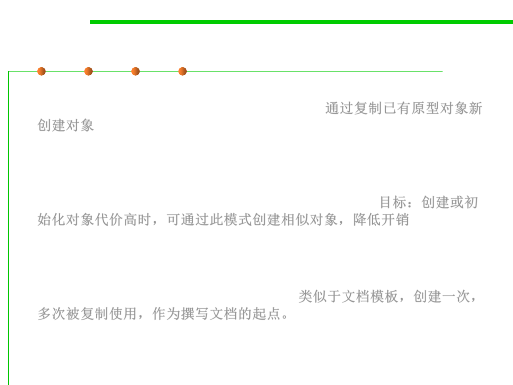

Prototype pattern
8.3 Code Tuning for Performance Optimization
▪ Specify the kinds of objects to create using a prototypical instance, and
create new objects by copying this prototype. 通过复制已有原型对象新
创建对象
▪ The prototype design pattern allows you to avoid expensive
initialization routines when you construct objects that are very similar.
The goal is to minimize the amount of work needed in creating new
objects when the initialization routines are expensive. 目标：创建或初
始化对象代价高时，可通过此模式创建相似对象，降低开销
▪ The concept of the prototype pattern is similar to a word document
template (prototype), where you create the template only once, then all
the objects that you create afterwards uses the template as the starting
point to avoid repeating the work again. 类似于文档模板，创建一次，
多次被复制使用，作为撰写文档的起点。